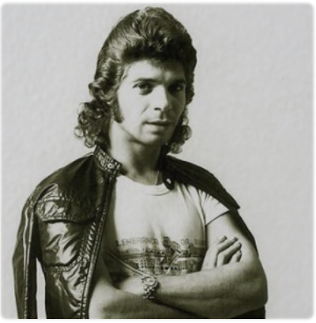

Enmascaramiento con CSS¶
Desvanecimiento de opacidad radial¶
Se trata de generar una imagen circular con los bordes difuminados a partir de una imagen normal.
Código
<style>
.circle {
border-radius: 50%;
display: inline-block;
position: relative;
}
.circle img {
border-radius: 50%;
display: block;
border:1px solid rgba(255,255,255,0);
}
.circle:after {
content: "";
display: block;
width: 100%;
height: 100%;
background: radial-gradient(ellipse at center, rgba(255,255,255,0) 0%,rgba(255,255,255,1) 69%,rgba(255,255,255,1) 100%);
border-radius: 50%;
position: absolute;
top: 0;
left: 0;
}
</style>
<div class="circle">
<image src="./../../_static/img/camaron.jpg">
</div>
Paso a paso
- Creamos un contenedor
divpara la imagen, lo redondeamos y añadimos la imagen dentro. - Redondeamos la imagen y eliminamos la opacidad del borde con
border: 1px solid rgba(255, 255, 255, 0). - Añadimos un contenido al
divcon una pseudopropiedadafter. El punto importante aquí es el atributobackgroundel cual, establecido aradial-gradient(ellipse at center, ...crea una elipse desde el exterior hacia el centro. Para más información sobre esta propiedad consulta la documentación de Mozilla.
Aplicar textura a una imagen¶
Coniste en superponer dos o más imágenes del mismo tamaño, disminuyendo la opacidad de la imagen de textura. Pulsa aquí para ver el ejemplo de abajo renderizado.
Mezcla de imagen y textura
Con textura distorsionada
Input
<style>
.image-layers img {
position: absolute;
}
#image-original {
position: absolute;
top: 10px;
width: 335px;
height: 342px;
}
#image-1 img {
left: 350px;
top: 10px;
}
#image-2 img {
left: 750px;
top: 10px;
}
#image-2 .image-texture {
filter: blur(1.5px) brightness(0.88);
}
.image-layer {
border-radius: 2%;
width: 396px;
height: 400px;
}
.image-texture {
opacity: 0.22;
z-index: 2;
}
</style>
<img id ="image-original" src="../../_static/img/camaron.jpg">
<div class="image-layers" id="image-1">
<img class="image-layer" src="../../_static/img/camaron.jpg">
<img class="image-texture image-layer" src="../../_static/img/textures/001.jpg">
</div>
<div class="image-layers" id="image-2">
<img class="image-layer" src="../../_static/img/camaron.jpg">
<img class="image-texture image-layer" src="../../_static/img/textures/001.jpg">
</div>
Paso a paso
- Para cada imagen creamos un contenedor
divcon una clase que engloba todas las capas de la imagen (class="image-layers") y establecemos un identificador para poder controlarla individualmente. - Creamos una capa para las texturas y otra para la imagen de salida (engloba a todas las capas) mediante las clases
image-layereimage-texture. Añadimos dentro de los contenedores cada imagen con su estilo. - Bajamos la opacidad de la capa de textura y establecemos las mismas dimensiones para todas las imágenes con la capa principal
image-layer. - Controlando individualmente las imagenes podemos acceder a los elementos anidados que queremos mediante selección de elementos como
#image-2 .image-texture. En el ejemplo se ha aplicado un filtro de CSS3.